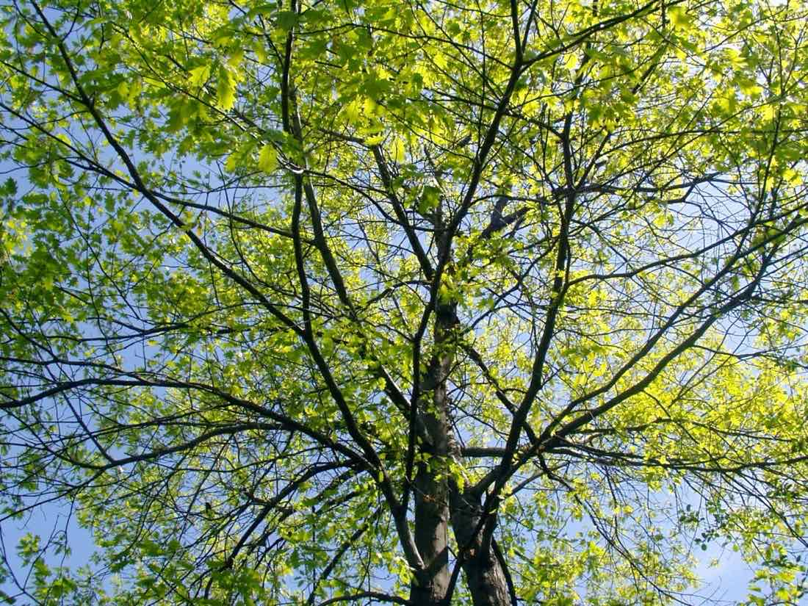
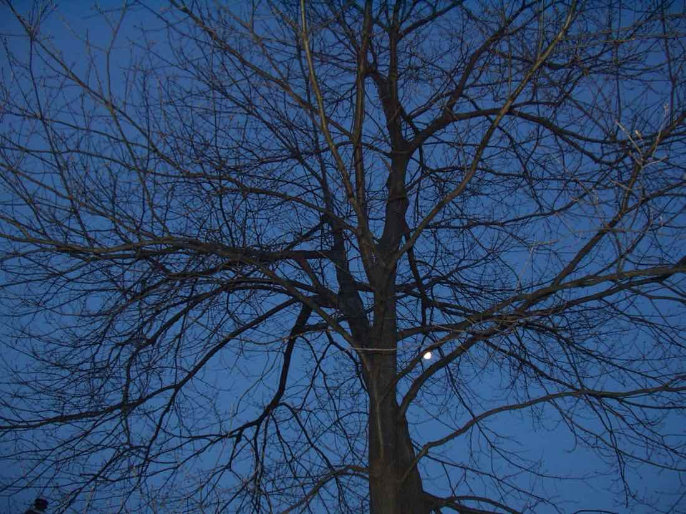
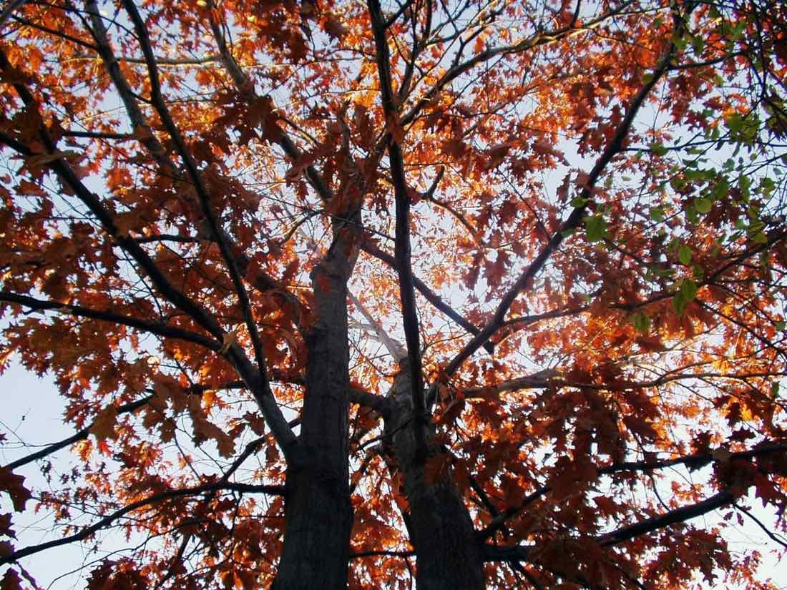
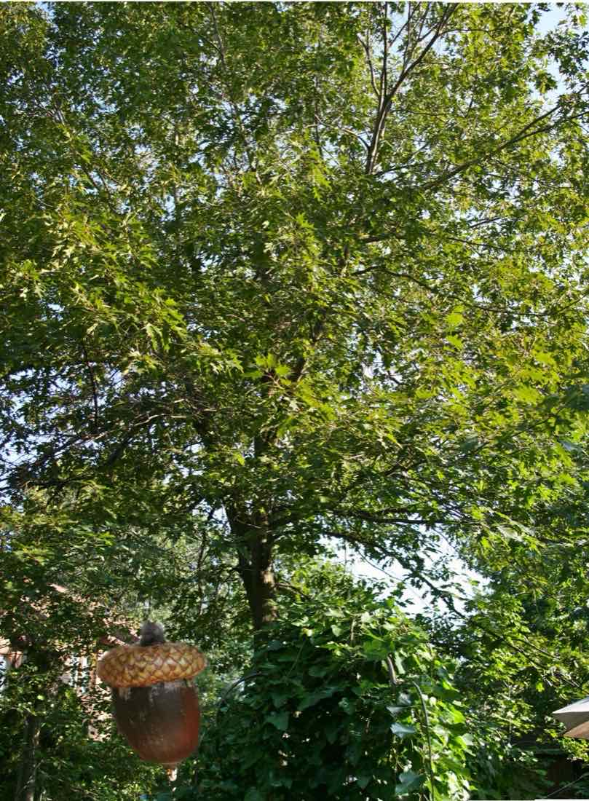

Maître Low, au dokusan suivant mon acceptation comme étudiant, m’a dit qu’il ne voulait pas que je discute mon koan, « Qui suis-je ? », mais plutôt que je le lui montre.
Pour me donner un exemple, il me proposa la réponse de Joshu au « Qui suis-je ? ». Joshu répondit : « Le chénier est dans le jardin. »
— Quoi ? ai-je demandé.
— Le chénier est dans le jardin… l’arbre est dans le jardin.
M. Low avait nommé le chêne d’un nouveau nom. En reprenant « L’arbre est dans le jardin », il manifestait son incertitude face à un mot d’une langue qu’il ne maîtrisait pas parfaitement. Ainsi il avait fait preuve de créativité sans le vouloir. Mais c’était bien dans cette direction qu’il voulait que je cherche une réponse à la question « Qui suis-je ? ».
Ce qu’il ne savait pas non plus, c’est qu’un chêne est la pièce maîtresse de mon jardin. Pour moi, le jardinier, son exemple avait une résonance toute particulière.
Mais en revenant chez moi, quelle ne fut pas ma surprise de découvrir, dans un livre écrit par M. Low, que la réponse de Joshu ne correspond pas à la question « Qui suis-je ? », mais plutôt à la question « Quel est le sens de la venue en Chine de Bodhidharma ? ».
Est-ce que mon maître essayait de me tromper ou de me déboussoler ?
De me déboussoler certainement, me tromper non, car chaque koan nous ramène à la question « Qui suis-je ? », avait-il dit durant un teisho de la sesshin.

Les trois questions
D’ailleurs, avant de me proposer ce premier koan, M. Low m’a dit : « Pour devenir mon étudiant, tu dois répondre à trois questions. »
- Désires-tu vraiment et profondément connaître qui tu es ?
- Es-tu prêt à payer le prix pour connaître ta vraie nature ?
- Me donneras-tu le bénéfice du doute quand je confronterai ton point de vue ?
« Pour Joshu, ce qui est en jeu, c’est l’immédiateté de l’arbre. Sa réponse n’est pas sans rappeler les iris de Van Gogh ou les pommes de Cézanne. Pour connaître les iris comme Van Gogh les connaissait ou les pommes comme Cézanne les connaissait, il faut être les iris, il faut être les pommes. Dans le Zen, on dit qu’il faut s’asseoir en méditation comme un chêne, avec ses racines profondément enfouies dans le sol et ses branches perdues dans le ciel immuable, tout d’un bloc, totalement un. Qui s’assoit ainsi n’aura aucune difficulté avec le chêne dans le jardin de Joshu. »
— Albert Low, Je ne suis pas un humain, 1996, p. 238
Le chêne libéré
Quand nous sommes arrivés, ma conjointe et moi, nous avons pris un terrain de banlieue conventionnel pour le transformer en un petit coin de campagne, en une forêt miniature. Nous sommes devenus des fermiers urbains à échelle réduite. Le jardin est un boisé, un environnement, un paysage.
Un grand chêne, épargné par les constructeurs, était pris au collet d’un besoin de platitude d’un terrain droit, bien au-dessus du niveau du sol original. Comme un rare témoin de la forêt qui a précédé nos bungalows, la place d’honneur lui revenait pour la suite du monde. Nous avons donc dégagé cet arbre, ce qui a donné au terrain une perspective nouvelle.
En redonnant à cet arbre son espace vital et de meilleures conditions de croissance, nous avons redessiné la cour pour en faire un prolongement de la forêt du parc régional, et depuis ce temps, il en profite à plein, ayant triplé sa structure à double tronc. Deux troncs qui s’entrelacent et s’étreignent.

Le gland
« This theory states that each individual holds the potential for their unique possibilities inside themselves already, much as an acorn holds the pattern for an oak, invisible within itself. »
— James Hillman, The acorn theory of the soul
Comme le gland du chêne, qui concentre en lui un grand arbre, nous possédons tous la nature du Bouddha, rien à enlever, rien à rajouter.

Le chêne dans le jardin, jamais le même à travers les saisons, ni le jour ni la nuit…
Ma nature d’arbre, ma nature de bouddha.